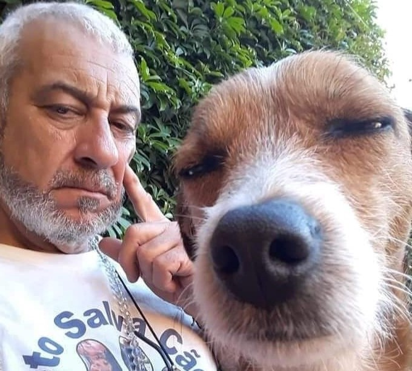

CONHEÇA OS DIREITOS DOS ANIMAIS
Cada vez mais, a sociedade reconhece a importância de se pensar em alternativas para minimizar a dor e o sofrimento dos animais. Aqui no Brasil, existem leis e políticas públicas voltadas para os direitos dos animais, considerando como crime os maus-tratos a qualquer espécie. Sobre o assunto, trouxemos os 10 direitos obrigatórios de todo animal

Confira os 10 direitos dos animais:
-
Todos os animais têm o mesmo direito à vida;
-
Todos os animais têm direito ao respeito e à proteção dos humanos;
-
Nenhum animal deve ser maltratado;
-
Todos os animais selvagens têm o direito de viver livremente no habitat;
-
O animal que o humano escolher para companheiro nunca deve ser abandonado;
-
Nenhum animal deve ser usado em experiências que causem dor;
-
Todo ato que põe em risco a vida de um animal é um crime contra a vida;
-
A poluição e a destruição do meio ambiente são considerados crimes contra os animais;
-
Os direitos dos animais devem ser defendidos por lei;
-
Os humanos devem ser educados para observar, respeitar e compreender os animais desde a infância.

Os direitos dos animais têm ganhado cada vez mais relevância e atenção por parte da sociedade e das autoridades. No entanto, ainda existem desafios a serem enfrentados, como a necessidade de uma fiscalização mais efetiva e o aprimoramento das leis para garantir a proteção abrangente e eficaz dos animais.